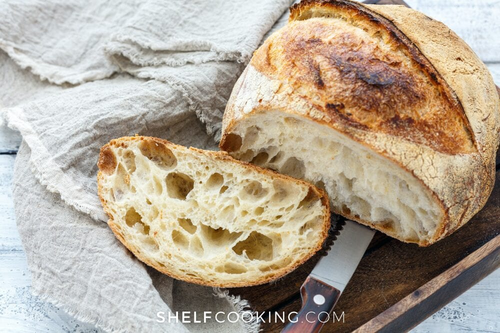

Basic Rustic Loaf

Easy to make at home Basic Rustic Loaf!
Ingredients
- Yeast
- White Bread Flour
- Salt
- Water
Steps
- Combine Ingredients (sans oil) in large mixin bowl until comes together, wait 15 mins
- Fold over into ball shape, wait 20 mins. Repeat 2 more times
- Rest for 2 hours. 1 hour into rest preheat oven to 475f
- Fold dough into oval shape and put into bread pan, put in oven for 25 mins or until bread is nice deep brown